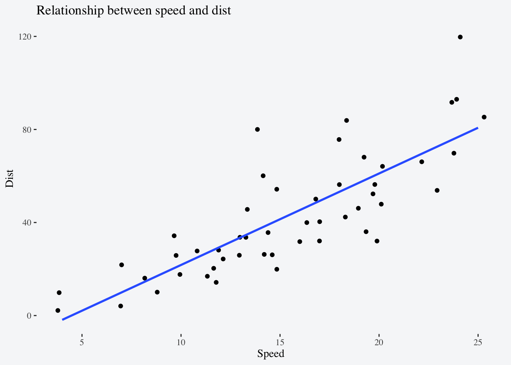
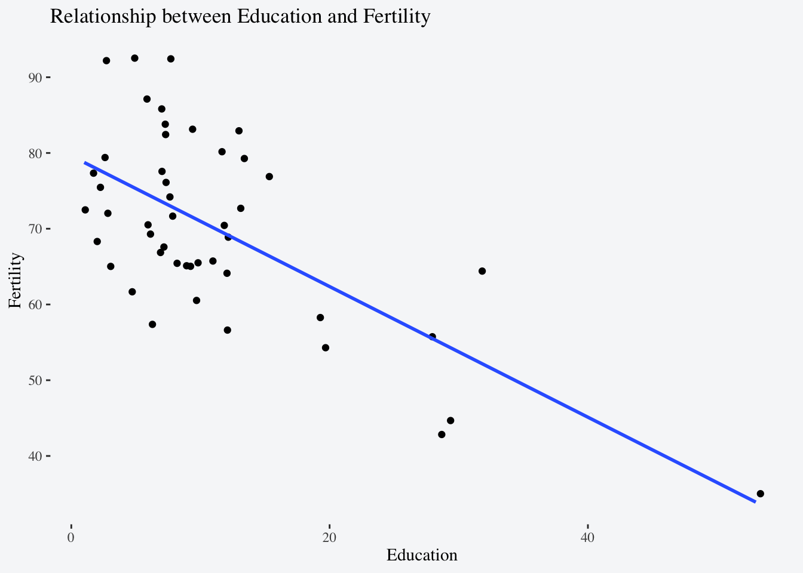
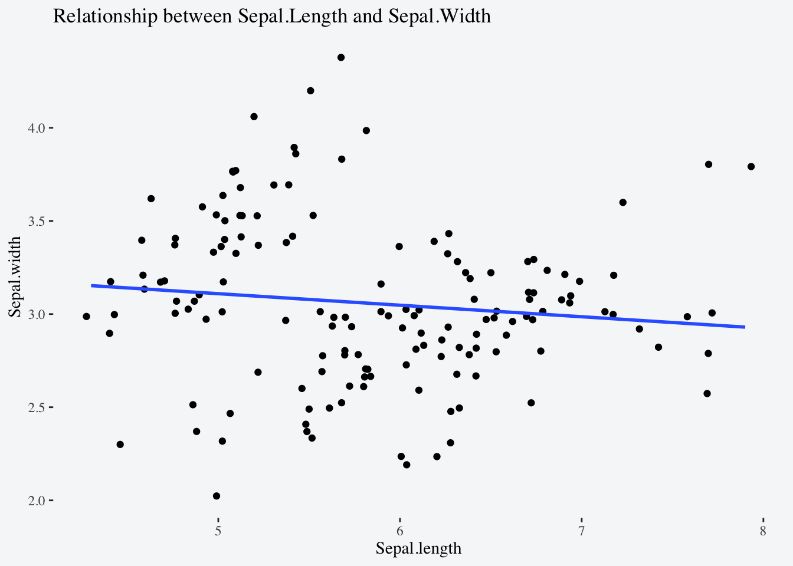

Code
knitr::opts_chunk$set(comment = ">")
library(tidyverse)
library(ggthemes)
load(url("https://github.com/vsass/CSSS508/raw/main/Lectures/Lecture7/data/restaurants.Rdata"))Given a vector of birthdates1, write a function to compute the ages in years. Test your function!
For each of the following functions list all arguments that use tidy evaluation and describe whether they use data-masking or tidy-selection: distinct(), count(), group_by()2, rename_with(), slice_min(), slice_sample().
| Function | Argument(s) | Tidy-Evaluation Type |
|---|---|---|
distinct() |
... |
data-masking |
count() |
... |
data-masking |
wt |
data-masking | |
group_by() |
... |
data-masking |
rename_with() |
.cols |
tidy-select |
slice_min() |
order_by |
data-masking |
by |
tidy-select | |
slice_sample() |
by |
tidy-select |
weight_by |
data-masking |
Build up a rich plotting function by incrementally implementing each of the steps below:
dataset and x and y variables.Test your function with the built-in datasets cars, swiss, and iris.
scatterplot <- function(dataset, x, y){
ggplot(data = dataset, aes(x = {{ x }}, y = {{ y }})) +
geom_jitter() +
geom_smooth(method = lm, se = FALSE) +
labs(title = rlang::englue("Relationship between {{ x }} and {{ y }}"),
x = str_to_title(rlang::englue("{{ x }}")),
y = str_to_title(rlang::englue("{{ y }}"))) +
theme_tufte()
}
scatterplot(cars, speed, dist)
scatterplot(swiss, Education, Fertility)
scatterplot(iris, Sepal.Length, Sepal.Width)


Format in mdy().↩︎
The documentation for group_by() doesn’t explicitly tell you which tidy evaluation method it uses so check out this resource to figure it out.↩︎